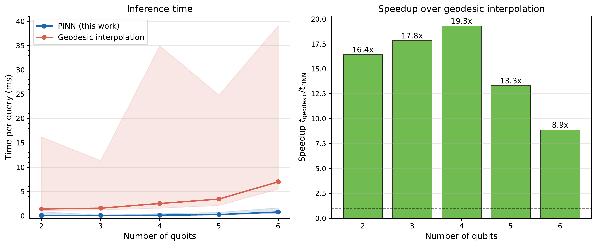
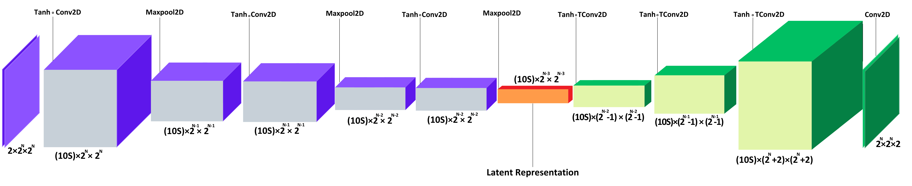

Deep Learning para problemas de información cuántica
Defensa de Tesis Doctoral — demo reveal.js
Antonio Guerra
Universidad de Concepción
Hoja de ruta
Background — información cuántica y deep learning
Estado del arte — combinando ambos mundos
Contribución 1 — interpolación de unitarias (PINNs)
Contribución 2 — reconstrucción desde marginales (CDAE + MIO)
Conclusiones y trabajo futuro
Idea rectora. Incrustar la física conocida en el aprendizaje
(physics-informed) extiende los métodos clásicos a problemas
cuya complejidad crece como \(2^N\).
Background: la barrera exponencial
Un estado de \(N\) qubits vive en un espacio de dimensión \(2^N\):
\[ \rho(t) = U(t)\,\rho_0\,U^{\dagger}(t), \qquad i\dot U = H(t)\,U \]
Construir/exponenciar \(U(t)\) escala como \(\mathcal{O}(2^{3N})\).
Con \(H(t)\) dependiente del tiempo no hay \(e^{-iHt}\) cerrado.
Physics-informed learning. La física entra por la loss:
la red aprende solo soluciones físicamente admisibles (unitaridad,
positividad, marginales).
Contribución 1 — Interpolación de unitarias (PINNs)
Dada \(U(t_i)\) en tiempos muestreados, interpolar \(U(t)\) en todo
\([0,T]\) sin conocer el Hamiltoniano.
\[ F(U,U_\theta) = \left|\tfrac{1}{d}\,\mathrm{Tr}[U^{\dagger}U_\theta]\right|^2 \]
Fidelidad \(\approx 0.99\) (2–8 qubits)
Speedups \(8.9\times\)–\(19.3\times\) vs. geodésica

Contribución 2 — Reconstrucción desde marginales (CDAE + MIO)
El Quantum Marginal Problem (QMA-completo): dado
\(\{\sigma_{\mathcal{J}}\}\), reconstruir un estado global \(\rho\) compatible.
Matriz de densidad → imagen de 2 canales
CDAE + MIO → estado físico válido
Transfer learning de 3 a 8 qubits
Más rápido que SDP (resuelve donde SDP falla)

Dos problemas duros, un mismo patrón: la física en la loss convierte lo intratable en aprendible.